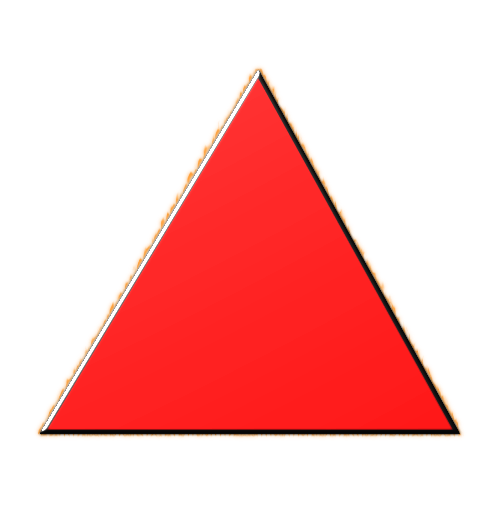
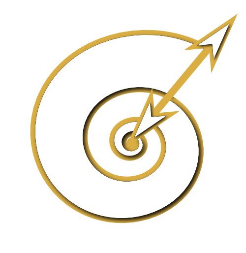
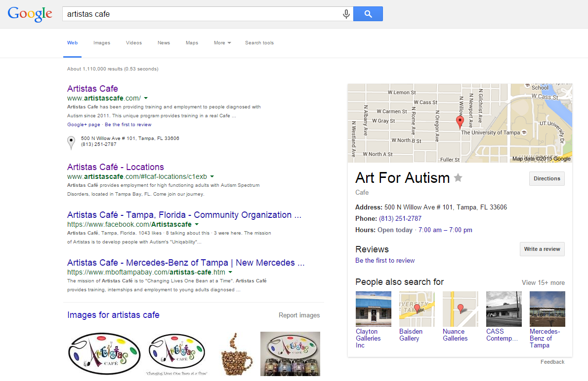
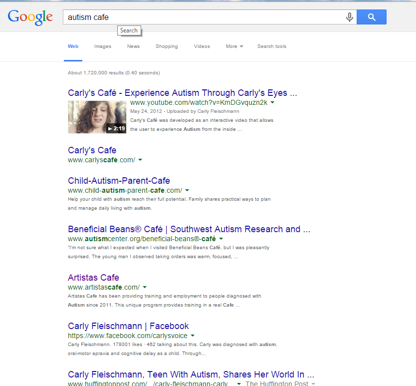

ArtistaS
is
growing
to
offer
new
services
,
affiliations
,
and
opportunities
locally

and
at
large
.
How will Artistas find new clients?
The Internet provides the means.
We can reach out and offer connections like never before.

Search Engine Optimization (SEO)
is the art of maximizing visibility & first exposure
to targeted demographics via search terms.
This allows us to focus individually on:
future artistas,
parents,
affiliates,
&
donors.
Client Relationship Management
allows us to maintain personalized contact with our clients.
In turn, we generate more conversions, satisfaction, and loyalty.
Modern CRM means that
everyone gets more from our partnerships.

An Affiliation Platform
delivers clear expectations to all of our partners, past and future.
This more tightly integrates our monitization model with our services
increasing value for everyone.
This Presentation
will blaze the path to make it clear
exactly how ArtistaS can reach utilize these
tools for growth.
We will review the aforementioned in three stages:
- Increasing web presence to allure new clients
- Perfecting how we relate to our clients
- How to monetize our services, thus sustaining our enterprise
First,
Let's learn how SEO can benefit us.
It is all about Rank.
The order that we list when one searches is considered "Rank".
The words one searches are termed "Keywords".
For Example,
This is our #1 ranking for the Keywords "ArtistaS Cafe"

Yet we rank #5 for the Keywords "Autism Cafe"...

Appearing anywhere on the first page is considered excellent
since most people don't navigate past this first page of results.
Thus we can begin to see the value of SEO.
It would be a tremendous boon to appear first for keywords like
"autism employment" or "autism charity".
So let us learn how to improve our visibility.
The nature of SEO is threefold:
- Explore all industry-specific options for directory listings, local maps
- Identify the most popular, profitable keywords
- Provide extensive keyword-related content for the search engines, social networks
Therefore, it can be as simple as starting a blog and posting it to social media.
ArtistaS
might petition these directories:
- Autism Source (biggest web presence)
- Autism Speaks (most popular)
- National Autism Directory (essential)
- Autism Blog Directory (much smaller)
- Autism Now (classic information site)
- Autism Directory (Active Twitter Account)
- Autism Key (national directory)
- All Top Autism News (news aggregator site)
- Autism Awareness (national directory)
- And many more, to be contacted in order of their Google search ranking.
And then we move on to
keyword research...
SEO
We can use these keywords to secure our Internet visibility
Keyword, Monthly Search Volume, Our #rank (unlisted rank >99)
SEO
We can use these keywords to secure our Internet visibility
Keyword, Monthly Search Volume, Our #rank (unlisted rank >99)
How will we get listed on these searches?
We will publish online content that includes these keywords and publish it broadly.
How can we use this marketing?
...
Traditionally,
This is accomplished through regular
blogging and Social Media promotion.
A typical schedule includes three blog posts per week with three daily posts to social media.
Blog Posts
can be focused around popular keywords
(e.g., "aspergers")
and provide useful content that appeals to unfilled niches within the community.
One excellent example are "lists" or "tips" that provide solutions for common problems.
Social Media Networks
allow for the same content to be circulated.
Every single linkback to our site increases ranking.
Since we have broad demographics, I would reccommend Facebook, Twitter, and LinkedIn as essential, with Instagram as a secondary option.
This can be a lot of work!
Thus many companies prefer to outsource
social media management and SEO.
Yet in-house blogging is more likely to yield relevant content.
Therefore I reccomend a conservative bloging schedule (once a week) combined with automated social sharing of these blog posts.
I can also facillitate additional posting on a schedule for a retainer fee.
Now,
with an idea of what SEO entails...
We will move on to how online tools can help us manage our diverse clients.
We have four kinds of clients:
- Affiliates -- (Includes B2B, advertisers, partners)
- Beneficiaries -- (Includes Artistas)
- Community -- (Includes parents, family, teachers)
- Donors -- (Includes donors)
Let's identify their unique needs.
Our Affiliates need:
- Advertising venues
- Public recognition
- Offers to promote themselves
- Access to our clients
Our Beneficiaries need:
- Access to our services
- Respect for their privacy
- Connection to each other
- Relationships with our staff
Our Community needs:
- Information regarding services
- Follow up on the beneficiaries
- Ability to contact, rate us
- Trust in our organization
Our Donors need:
- Easy tools to make donations
- Public recognition
- Other incentives, possibly affiliation
- Connection to beneficiaries
Now, let's talk about different web assets:
Website
- Assuming static website, org-to-client information only
- Also useful for collecting leads, emails, other limited information
- A: Initial exposure, marketing revenue
- B: Initial exposure, information, application
- C: Initial exposure, information, application
- D: Initial exposure, ability to donate
- Limited to email lists, generally preexisting clients
- Labor intensive, increasingly subject to filtering
- A: Provides follow up, venue for advertising
- B: Induction into program, invitations, follow up
- C: Invitations, info on beneficiaries
- D: Follow up regarding donations, call for donations
Blog
- Most valuable story-telling device; builds trust
- Essential SEO practice
- Provides avenue for advertising and exhibition
- A: May provide in-depth affiliate promotion; guest posts
- B: Establishes Trust, improves SEO, exhibits development
- C: Establishes Trust, improves SEO, exhibits impact
- D: Improves SEO, establishes trust, exhibits impact
Directories
- Excellent venue to improve visibility
- Creating one's own directory (A-ready employers?) provides leverage
- Donor directories contribute significant traffic
- A: Our own directory would contribute advertising
- B: Establishes Trust, improves SEO
- C: Establishes Trust, improves SEO
- D: Drives substantial traffic, improves SEO, establishes trust
Traditional Ads
- Increasingly poor ROI via Google, FB, etc
- Still viable for local papers, posters, listings
- A: Initial exposure
- B: Initial exposure, advertising for B's businesses
- C: Initial exposure
- D: Initial exposure, could target local demographics
Forums
- Other forums: Very low cost, time-intensive strategy for reputation-building
- Hosting a forum takes much less time, accrues value over time
- A: Provides reliable advertising space with predictable traffic
- B: Allows for vertical and horizontal connections, provides services
- C: Allows for vertical and horizontal connections, provides services
- D: Provides connection, exhibits impact
Offers
- Bread and butter of traditional marketing
- Includes deals, contests, exchanges, promotions
- A: Integral access to B's and C's
- B: Promotion of B's businesses
- C: Potential for sucessful value propositions
- D: Incentivized giving; targetted donations
Events
- Substantial organization for physical events occurrs online
- Geolocalization is possible
- Users can be provided with the tools to set-up their own events
- A: Ability to contribute and advertise
- B: Horizontal connections, provide services, vertical connections
- C: Horizontal connections, vertical connections, provide services
- D: Provides connection, exhibits impact, fundraising
Videos
- This is the most immersive form of media available
- Excllent for story-telling, advertising, and promotion
- A: Webinars and ads provide in-depth advertising
- B: Webinars can offer services, video can exhibit progress
- C: Webinars can offer services, video can exhibit impact
- D: Persuasive form of advertising, connects to impact
Online Community
- Provides users with the tools to create their own content
- The highest potential of the Internet
- Highest overhead, moderate maintenance, greatest value
- E.g., Online stores through which B's sell their goods
- A: Popular websites attract affiliates
- B: Services, connection are the direct consequence of engagement
- C: Services, connection are the direct consequence of engagement
- D: Connection; directed donations possible
Trust
- Laborious and steady development of online reputation
- Ultimately the most valuable Internet asset
- Engaging clients online and in high volume is the best means to accrue reputation
- A: Increases exposure; attracts affiliates
- B: Increases exposure; increases enrollment
- C: Increases exposure; increases enrollment
- D: Increases exposure; increases donations
Now, let's see how
| Website | Blog | Directory | Social Media | Traditional Ads | Forum | Offers | Events | Videos | Community | Trust | ||
|---|---|---|---|---|---|---|---|---|---|---|---|---|
| Exposure | A B C D | A B C D | A B C D | A B C D | A B C D | A B C D | A B C D | A B C D | A B C D | A B C D | A B C D | |
| Follow Up | A B C D | A B C D | A B C D | A B C D | ||||||||
| Services | A D | A D | D | A | A | A C D | A B | A B C | A C D | |||
| Connection | A B C D | A B C D | A B C D | A B C D | A D | A B C D | A B C D | |||||
| Exhibition | A B C D | A B C D | A B C D | A B C D | A B C D | A | A B C D | B C D | A B C D | B C D | ||
| Advertising | A | A B C D | A B C D | A D | A B C D | B C | A B C D | A | A B C D | B C D | A B C D | A B C D |
| Story | A B C D | A B C D | A B C D | A B C D | A B C D | A B C D | A B C D | B C D | A B C D |
Social Media